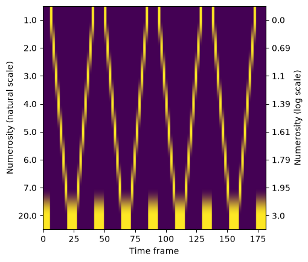

Creating a custom model¶
Author: Malte Lüken (m.luken@esciencecenter.nl)
Difficulty: Intermediate
This tutorial explains how to create a custom model with prfmodel.
Part 1: Implementing a 1D Gaussian pRF model¶
In the first part, I show how to implement a 1-dimensional Gaussian population receptive field (pRF) model analogous to the canonical 2-dimensional model. The 1D model is often used to model neural responses to auditory or numerosity stimuli that lie on a single dimension (i.e., tone frequency or displayed number of objects; see Harvey et al., 2013).
Loading a 1D stimulus¶
We start by loading an example 1D PRFStimulus from a numerosity experiment (for details, see load_1d_prf_lognumerosity_stimulus()).
from prfmodel.examples import load_1d_prf_lognumerosity_stimulus
stimulus = load_1d_prf_lognumerosity_stimulus()
print(stimulus)
PRFStimulus(design=array[182, 8], grid=array[8, 1], dimension_labels=['log_numerosity'])
We can visualize the design matrix with the displayed numerosity at each time frame on the natural and log scale.
import matplotlib.pyplot as plt
import numpy as np
unique_log_numerosities = stimulus.grid[:, 0]
unique_numerosities = np.round(np.exp(unique_log_numerosities))
fig, ax = plt.subplots()
ax.imshow(stimulus.design.T, aspect=stimulus.design.shape[0]/stimulus.design.shape[1])
ax.set_xlabel("Time frame")
ax.set_ylabel("Numerosity (natural scale)")
ax.set_yticks(np.arange(len(unique_numerosities)))
ax.set_yticklabels(unique_numerosities)
secax = ax.secondary_yaxis("right")
secax.set_ylabel("Numerosity (log scale)")
secax.set_yticks(np.arange(len(unique_numerosities)))
secax.set_yticklabels(np.round(unique_log_numerosities, 2));

Implementing the custom tuning model¶
Now we implement the 1D Gaussian tuning class by subclassing
BaseTuning (note that the 1D Gaussian pRF tuning model is already included in the package as Gaussian1DPRFTuning).
This class is called “tuning model” because it describes the sensitivity of a neuron population varies across the feature space in which the experimental stimulus is defined (here log numerosity).
We first take a look at the docstring of the class:
from prfmodel.models.base import BaseTuning
help(BaseTuning)
Help on class BaseTuning in module prfmodel.models.base:
class BaseTuning(prfmodel.protocols.ModelProtocol, typing.Generic)
| BaseTuning(*args, **kwargs)
|
| Generic abstract base class for neuron population tuning models.
|
| A tuning model takes a stimulus and parameters as input and predicts how the sensitivity of a neuron population
| varies across the feature space the stimulus is defined on. It returns a tuning profile conditional on its
| parameters. The definition of the tuning profile varies between stimulus feature spaces. For example, for 2D
| population receptive field (pRF) tuning models, the tuning profile is a Gaussian density defined over x- and y-
| coordinates.
|
| Notes
| -----
| This class cannot be instantiated on its own. It can only be used as a parent class to create custom tuning
| models. Subclasses must override the abstract :attr:`parameter_names` property and the :meth:`call` method,
| and must be defined with a specific user-facing stimulus type and its matching tensor-holding type.
| See :mod:`~prfmodel.models.base` for details.
|
| Do not override :meth:`__call__`. It is the public facade that validates the parameters, resolves the dtype
| and converts both the stimulus and the parameters to tensors before handing them to :meth:`call`, then
| converts the result back to a :class:`numpy.ndarray`.
|
| Examples
| --------
| Reimplement a 2D isotropic Gaussian pRF tuning model for a :class:`~prfmodel.stimuli.PRFStimulus`.
|
| >>> import pandas as pd
| >>> from prfmodel.examples import load_2d_prf_bar_stimulus
| >>> from prfmodel.stimuli import PRFStimulus, PRFStimulusTensors
| >>> from prfmodel.models.prf import predict_gaussian_response
| >>> # Define custom child class
| >>> class CustomGaussian2DTuning(BaseTuning[PRFStimulus, PRFStimulusTensors]):
| ... @property
| ... def parameter_names(self):
| ... return ["mu_y", "mu_x", "sigma"]
| ... def call(self, stimulus, parameters):
| ... return predict_gaussian_response(
| ... stimulus.grid, parameters[["mu_y", "mu_x"]], parameters[["sigma"]]
| ... )
| >>> # Load example pRF stimulus
| >>> stimulus = load_2d_prf_bar_stimulus()
| >>> # Define parameters
| >>> params = pd.DataFrame({
| ... "mu_y": [0.0, 1.0],
| ... "mu_x": [1.0, 0.0],
| ... "sigma": [1.0, 1.5],
| ... })
| >>> # Create child model instance
| >>> model = CustomGaussian2DTuning()
| >>> # Make model prediction for example stimulus
| >>> resp = model(stimulus, params)
| >>> print(resp.shape) # (num_units, num_y, num_x)
| (2, 128, 128)
|
| Method resolution order:
| BaseTuning
| prfmodel.protocols.ModelProtocol
| typing.Protocol
| typing.Generic
| builtins.object
|
| Methods defined here:
|
| __call__(self, stimulus: ~S, parameters: pandas.DataFrame, dtype: str | None = None) -> numpy.ndarray
| Predict the model response for a stimulus.
|
| This is the public entry point. It accepts the user-facing types, validates them, converts them to
| tensors and delegates the arithmetic to :meth:`call`, then returns the result as a
| :class:`numpy.ndarray`. Subclasses implement :meth:`call`, not this method. Use :meth:`call` when a
| backend tensor is required.
|
| Parameters
| ----------
| stimulus : Stimulus
| Stimulus object.
| parameters : pandas.DataFrame
| Dataframe with columns containing different model parameters and rows containing parameter values
| for different units.
| dtype : str, optional
| The dtype of the prediction result. If `None` (the default), uses the dtype from
| :func:`prfmodel.utils.get_dtype`.
|
| Returns
| -------
| numpy.ndarray
| Model predictions of shape `(num_units, ...)` and dtype `dtype`. The number of units is the
| number of rows in `parameters`. The number and size of other axes depends on the stimulus.
|
| Raises
| ------
| ValueError
| If `parameters` is missing one or more of :attr:`parameter_names`.
|
| call(self, stimulus: ~T, parameters: prfmodel.utils.TensorFrame) -> tensorflow.python.framework.tensor.Tensor
| Predict the model response from tensors.
|
| Parameters
| ----------
| stimulus : StimulusTensors
| The tensor-holding stimulus object, from :meth:`~prfmodel.stimuli.Stimulus.to_tensors`.
| parameters : TensorFrame
| Model parameters as tensors, supporting the same column selection as a :class:`pandas.DataFrame`.
|
| Returns
| -------
| :data:`prfmodel.typing.Tensor`
| Model predictions of shape `(num_units, ...)`.
|
| Notes
| -----
| Implementations must be traceable by a backend compiler, because this is the method the fitters
| wrap in ``tf.function`` or ``jax.jit``. In practice: use :mod:`keras.ops` only, never :mod:`numpy`
| or :mod:`pandas`, and never branch on a tensor *value*. Branching on a tensor *shape* is fine, since shapes are
| known at trace time. Checks that need concrete values belong in :meth:`__call__`.
|
| ----------------------------------------------------------------------
| Class methods defined here:
|
| __subclasshook__ = _proto_hook(other) from typing
|
| ----------------------------------------------------------------------
| Data and other attributes defined here:
|
| __abstractmethods__ = frozenset({'call', 'parameter_names'})
|
| __annotations__ = {}
|
| __orig_bases__ = (<class 'prfmodel.protocols.ModelProtocol'>, typing.G...
|
| __parameters__ = (~S, ~T)
|
| ----------------------------------------------------------------------
| Methods inherited from prfmodel.protocols.ModelProtocol:
|
| __init__ = _no_init_or_replace_init(self, *args, **kwargs) from typing
|
| check_parameter_names(self, parameters: pandas.DataFrame) -> None
| Check that required parameter names are supplied.
|
| Parameters
| ----------
| parameters : pandas.DataFrame
| Dataframe with columns containing different model parameters and rows containing parameter values
| for different units.
|
| Raises
| ------
| ValueError
| When a parameter name in the :attr:`parameter_names` attribute is not a column in ``parameters``.
|
| check_parameter_values(self, parameters: pandas.DataFrame) -> None
| Check that the parameter values lie inside the domain the model is defined on.
|
| Parameters
| ----------
| parameters : pandas.DataFrame
| Dataframe with columns containing different model parameters and rows containing parameter values
| for different units.
|
| Raises
| ------
| ValueError
| When a parameter that must be ``> 0`` is zero or negative.
|
| get_consumed_parameter_names(self, parameters: pandas.DataFrame) -> list[str]
| Return the parameter names the model reads from ``parameters``.
|
| A name covered by :attr:`default_parameters` is only read when the caller supplies a column for it;
| otherwise the default is merged in further down and the column would be absent here.
|
| Parameters
| ----------
| parameters : pandas.DataFrame
| Dataframe with columns containing different model parameters and rows containing parameter values
| for different units.
|
| Returns
| -------
| list of str
| Names of the parameters the model reads from ``parameters``.
|
| ----------------------------------------------------------------------
| Readonly properties inherited from prfmodel.protocols.ModelProtocol:
|
| parameter_names
| A list with names of parameters that are used by the model.
|
| ----------------------------------------------------------------------
| Data descriptors inherited from prfmodel.protocols.ModelProtocol:
|
| __dict__
| dictionary for instance variables
|
| __weakref__
| list of weak references to the object
|
| ----------------------------------------------------------------------
| Data and other attributes inherited from prfmodel.protocols.ModelProtocol:
|
| __non_callable_proto_members__ = {'_positive_parameter_names', 'parame...
|
| __protocol_attrs__ = {'_positive_parameter_names', 'check_parameter_na...
|
| ----------------------------------------------------------------------
| Class methods inherited from typing.Protocol:
|
| __init_subclass__(*args, **kwargs)
| Function to initialize subclasses.
|
| ----------------------------------------------------------------------
| Class methods inherited from typing.Generic:
|
| __class_getitem__(...)
| Parameterizes a generic class.
|
| At least, parameterizing a generic class is the *main* thing this
| method does. For example, for some generic class `Foo`, this is called
| when we do `Foo[int]` - there, with `cls=Foo` and `params=int`.
|
| However, note that this method is also called when defining generic
| classes in the first place with `class Foo[T]: ...`.
We can see that BaseTuning has two abstract methods that must be overridden when subclassing:
__abstractmethods__ = frozenset({'call', 'parameter_names'}).
The
parameter_namesproperty, which lists the parameter names the model expects.The
callmethod, which computes the pRF response for a given stimulus and parameter set. This method can implement an arbitrary response function, but here we re-use from the Gaussian module, which is dimension-agnostic and works for any number of spatial dimensions.
Note that we implement call, not __call__. Model classes have two entry points:
__call__is the user-facing public facade. It takes the types users typically work with, e.g., aPRFStimulusholding NumPy arrays and apandas.DataFrameof parameters. It checks that every required parameter is present, resolves thedtype, converts everything to backend tensors, callscall, and converts the result back to anumpy.ndarray. It is implemented once on the base class, and you should not override it.callis the tensor-only kernel. It receives aPRFStimulusTensors(that only holds tensors) and aTensorFrame(the parameters as tensors, which you select by column name exactly like a data frame), and it returns a backend tensor. Because everything arriving here is already a tensor and nothing needs validating, this is the method the fitters wrap intf.function,torch.compile, orjax.jitto run the optimization in graph mode.
So the NumPy arrays go in and NumPy arrays come out: a prediction from __call__ can go straight into
matplotlib or scipy with no conversion, and it works the same on GPU for every backend.
Backend tensors stay an implementation detail below call. When you do need a tensor, for example inside your
own call, call call directly rather than __call__.
That division has one rule you have to respect when writing call: it must be traceable. Use
keras.ops only, never NumPy or pandas, and never write an if statement that branches on a tensor value.
While a graph is being built, a tensor holds no value to branch on, so a check like if ops.all(sigma > 0)
raises an error. Branching on a tensor shape is fine because shapes are known while tracing. If you need to reject bad
parameter values, do it where the values are still concrete, for example by overriding the check_parameter_values()
method of the model class (more on that soon).
We can also see that BaseTuning is a generic class with respect to the stimulus.
This means we need to specify for which stimulus type the class is defined, and which tensor type matches it.
In our case, these are PRFStimulus and
PRFStimulusTensors (for a connective field tuning model, these would be
CFStimulus and CFStimulusTensors).
from prfmodel.models.prf import predict_gaussian_response
from prfmodel.stimuli import PRFStimulus, PRFStimulusTensors
from prfmodel.utils import TensorFrame
# Define the generic class for the concrete 'PRFStimulus' type and its matching tensor type
class Gaussian1DPRFTuning(BaseTuning[PRFStimulus, PRFStimulusTensors]):
# 'parameter_names' is a property so that it becomes "immutable"
@property
def parameter_names(self) -> list[str]:
"""Names of parameters used by the model: `mu`, `sigma`."""
return ["mu", "sigma"]
def call(
self,
# The 'stimulus' argument must be the tensor type from the concrete types above
stimulus: PRFStimulusTensors,
parameters: TensorFrame,
):
"""Predict the model response for a stimulus with a 1D grid.
Parameters
----------
stimulus : PRFStimulusTensors
The stimulus arrays as tensors.
parameters : TensorFrame
Model parameters as tensors, selected by column name like a data frame.
Returns
-------
Tensor
Model predictions of shape `(num_units, num_coordinates)`.
`num_units` is the number of rows in `parameters` and `num_coordinates` is the size of the
stimulus grid dimension.
"""
# No dtype handling and no tensor conversion here: '__call__' already did both, so 'stimulus.grid'
# is a tensor and 'parameters[["mu"]]' returns one.
mu = parameters[["mu"]]
sigma = parameters[["sigma"]]
# We can implement the Gaussian response from scratch
# import math
# grid = ops.expand_dims(stimulus.grid, 0)
# mu = ops.expand_dims(mu, 1)
# sigma_squared = ops.square(sigma)
# # Gaussian response
# resp = ops.sum(ops.square(grid - mu), axis=-1)
# resp /= 2 * sigma_squared
# # Divide by volume to normalize
# volume = (2 * math.pi * sigma_squared) ** (1 / 2)
# return ops.exp(-resp) / volume
# Or we can use an existing function to predict a Gaussian response
return predict_gaussian_response(stimulus.grid, mu, sigma)
The mu parameter defines the preferred location on the stimulus dimension (here: preferred log numerosity) and sigma defines the tuning width. Selecting parameters[["mu"]] and parameters[["sigma"]] gives tensors with shapes (num_units, 1).
Even though we implemented call, we still use the model by calling it normally because model(stimulus, parameters) goes through the facade, which validates the parameters and converts them before reaching our call.
predict_gaussian_response expects mu and sigma to have at least two dimensions: the first for the number of units and the second for the number of spatial dimensions. The function then broadcasts these tensors against the stimulus grid to compute the Gaussian response for each unit.
Creating the model¶
With the Gaussian1DPRFTuning class defined, we pass it as the prf_model argument to CanonicalPRFModel. The canonical model handles stimulus encoding, impulse response convolution, and baseline amplitude scaling using default submodels. Note that the 1D Gaussian pRF model is already included in the package as Gaussian1DPRFModel.
from prfmodel.models.prf.canonical import CanonicalPRFModel
model = CanonicalPRFModel(
prf_model=Gaussian1DPRFTuning(),
)
We can inspect all parameters required by the composite model through the parameter_names property.
model.parameter_names
['mu',
'sigma',
'delay',
'dispersion',
'undershoot',
'u_dispersion',
'ratio',
'weight_deriv',
'baseline',
'amplitude']
The parameters mu and sigma come from our custom Gaussian1DPRFTuning. The remaining parameters belong to the default impulse response model (DerivativeTwoGammaImpulse) and the scaling model (BaselineAmplitude).
Simulating a neural response¶
Let’s simulate predicted neural responses for each unique numerosity while keeping the tuning width fixed to sigma = 1.
import pandas as pd
num_units = len(unique_numerosities)
params_mu = pd.DataFrame(
{
"mu": unique_log_numerosities, # We need to specify the location of the Gaussian in log space
"sigma": [1.0] * num_units, # We keep the tuning width fixed
"weight_deriv": [0.5] * num_units,
"baseline": [0.0] * num_units,
"amplitude": [1.0] * num_units,
}
)
prediction = model(stimulus, params_mu)
print(prediction.shape)
(8, 182)
The output has shape (8, num_frames) – one predicted time course for each unique numerosity.
We can visualize the predicted response over time.
import plotly.io as pio
import plotly.express as px
pio.renderers.default = "notebook_connected" # Requires internet connection to work
pio.templates.default = "simple_white"
# Name the columns after the numerosities so the animation slider shows them instead of the column index
prediction_mu = pd.DataFrame(prediction.T, columns=unique_numerosities.astype(int))
fig = px.line(
prediction_mu,
animation_frame="variable",
range_x=(0, stimulus.design.shape[0]),
range_y=(-0.2, 0.6),
labels={
"index": "Time frame",
"value": "Predicted neural response",
"variable": "Numerosity (natural scale)",
},
)
fig.update_layout(showlegend=False, height=450)
fig.show()
The predicted response peaks around the time frames at which the stimulus design passes through each units’s preferred frequency, and decays afterwards due to the impulse response convolution. This is exactly what we would expect from a 1D Gaussian pRF model.
We can also simulate and visualize predicted timecourses for different tuning widths sigma.
num_units = 10
params_sigma = pd.DataFrame(
{
"mu": np.log([3] * num_units),
"sigma": np.linspace(0.5, 3.0, num_units),
"weight_deriv": [0.5] * num_units,
"baseline": [0.0] * num_units,
"amplitude": [1.0] * num_units,
}
)
prediction = model(stimulus, params_sigma)
# Name the columns after the tuning widths so the animation slider shows them instead of the column index
prediction_sigma = pd.DataFrame(
prediction.T,
columns=[f"{sigma:.2f}" for sigma in params_sigma["sigma"]],
)
fig = px.line(
prediction_sigma,
animation_frame="variable",
range_x=(0, stimulus.design.shape[0]),
labels={
"index": "Time frame",
"value": "Predicted neural response",
"variable": "pRF width (sigma)",
},
)
fig.update_layout(showlegend=False, height=450)
fig.show()
We can see that the tuning width determines the sharpness of the predicted response peaks.
Part 2: TBD¶
This part will be added in a future version.
Conclusion¶
In this tutorial, I showed how to create a custom 1D Gaussian pRF model for a fictional numerosity experiment. I first created a stimulus for the fictional experiment. Then, I created a custom pRF response model and inserted it into the default composite pRF model that combines the pRF response with an impulse and scaling model.
References¶
Harvey, B. M., Klein, B. P., Petridou, N., & Dumoulin, S. O. (2013). Topographic representation of numerosity in the human parietal cortex. Science, 341(6150), 1123-1126. https://doi.org/10.1126/science.1239052